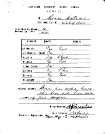
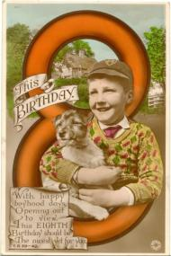
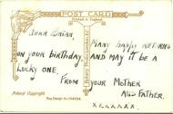
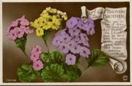
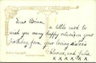

My diaryI have got a Diary for this year. My birthday is on the 31st of July which is a Saturday. Last year it was on Friday and Christmas Day was on a Friday. This year Christmas Day will be on a Saturday, so Christmas Day is always the same day of the week as my birthday. Clarice’s birthday will be on the 13th of December, which is a Monday, and Julia’s birthday will be on the 17th of September, which is a Friday, but we were all born on Wednesday. Daddy’s birthday is on the 27th of February, which is a Saturday, and Mammy’s birthday is on the 6th of August, which is on a Friday. Sunday is the first day of the week. I like my diary. It is very useful to write things in if I can think of anything. |
Good FridayIt is Good Friday today when Jesus died on the Cross. It is also Reggie’s birthday today, he is now 10. |
GodI went to school with Margaret Hibberd and in Greenwood Avenue I said to her that God made the sun and the moon and everything in the world. She said that he didn’t make that letter box. I said no but he made the stuff that the letterbox was made of. |
Mrs. Williams-WalkerWe went to the Mission this afternoon. I like going and singing the hymns. Miss Stanley plays the piano. The War is still on and Mammy often tells people how we were buying our own house until we were bombed out and lost everything. She says we did get some compensation but it wasn’t much because we were honest. [jpg] I wonder what happened to the people we lived next door to at Belchers Lane, Mrs. Walker at 25 and Mr. & Mrs. Rowe at 21 and Norman Rowe at 19.
|
At Hartfield Crescent SchoolWe broke up for the summer holiday today. I have come 15th out of 43 in Mr. Bailey’s class. I am good at Arithmetic, Reading, Composition, History and Geography, and fairly good at English and Writing. I started at Hartfield Crescent in Mrs. Howe’s class [Dorothy Mary Howe] in September 1941 when I was 6, and then went up to Miss Billingsley’s in January 1942. This year I went up to Mr. Bailey’s, and I shall be in Mrs. Wright’s class when we go back. I did not go to school much until I was 6. I had just started at Sladefield Road School when we got bombed out [19th November 1940]. We stayed at Granma and Grandad’s house, then at Aunt Edna’s, then with Maud and Harold Cox, and then we were going to live with Mr. & Mrs. Moore but their house had been bombed when we got there. After this we lived at Kathleen Road, Hay Mills, and I went to Redhill Road Infants School for a short time before we moved to Acocks Green 2 years ago. |
 |
|
I am 8 now. I have had 6 cards for my birthday. from Mam and Dad, Clarice and Julia, Granma and Grandad Smith, Aunt Edna and Uncle Albert, Iris, Allen, Reggie, Bobbie and Margaret [Ricketts, postmarked 6am this morning] and one from Phillip Davis [written by his mother: they live at 5 Circular Road]. |


The card from Mam and Dad The card from Clarice and Julia |
Sir Oswald MosleyWe went to the Mission as usual this afternoon. We go on the 44 ’bus from down the village and come back on the 31A ’bus from Bradford Street. The ’bus stop where we catch it is in Bradford Street just round the corner from Rea Street. On the other side of Bradford Street someone has painted in big white letters on a wall KEEP MOSLEY IN GAOL. I feel very sorry for Mosley and wonder who he is. |
A strange sight in the skyI saw a strange sight in the sky when I was down the village. It was getting dark and I was just coming up Shirley Road by Walkers when a thin streak of light passed through the sky in a dead straight line from left to right, not very high up. It was a gold colour and I watched it for a few seconds before it disappeared. I went to the Library to look at the books on astronomy and found one with a picture of a meteor and a list of meteors to be seen. They are:— 2nd January, DraconidsAs the Leonids can be seen tomorrow I think it must be one of those. |
|
I have drawn a picture of the Meteor with my coloured pencils and have written across the top “This Meteor passed over Birmingham on November 13th 1943.” I am going to take it to Cubs and show it to Mr. Harvey to see if I can get my Artists Badge for it.
|
|
At school Mrs. Wright wrote a poem on the blackboard for us to copy [jpg] into our books. I started a new Composition book today. We also learned about Describing Words, which are called Adjectives. |
Knock-OutI have had the Knock-Out Fun Book 1944 for Christmas. It is a big book of 192 pages, containing Billy Bunter —the fattest schoolboy on earth, Professor Pea-Nut — he always forgets to remember, The Adventures of Red Sword, Kiddo — the Boy King, Daffy the cowboy ”tec, Sexton Blake, Those Crazy Kids, Handy Andy the oddjob man, Deed-A-Day Danny, The Adventures of Little Tough Guy, The Queer Adventures of Patsy and Tim (their uncle invented the dwindling pills which make them tinier and tinier and tinier), Our Ernie —Mrs. Entwhistle’s Little Lad, Sandy and Muddy, Stonehenge Kit —the Ancient Brit, Daddy Dolittle, Perky Parker’s Police Station, various stories including The Mystery of Greygable Hall, Potty poems and several pages of puzzles. Some of the comic strips are in red and blue. On the back of the Knock-Out Annual there is an advert for Bournville Cocoa:— “That chocolaty taste. It’s good to sea the youngsters getting their chocolate ration — small as many no doubt think it. Here’s a useful hint to mothers. When the chocolate ration is finished, the children can get that chocolaty flavour they like so much as a drink — in Bournville Cocoa. A very warming, beneficial drink too and, like solid chocolate, a food. After all, chocolate and cocoa come from the same bean. Less than pre-war price Bournville Cocoa Fivepence a Quarter (you save on ½ lbs).” I have also had World Wide Adventure Stories from Granma Smith and have read a bit of it. There are nine stories which are:— Red Eagle by Ernest H. Robinson, The Beleaguered House by Francis Cowen, Makele the Mighty by Richard Ogle, The Secret of the Maze by S. Walkey, The Atlantic Test by Stanton Hope, Mysterious Mr. Mould by Alfred Judd, The Plunderers also by Alfred Judd, Out of the Blue by Francis Cowen and Aztec God by Denis Morrell. Granma has written inside the cover “From Grand Mother To Bryan” and changed it to Brian. Also inside the cover at the top somebody has also written “Mrs. Smith” very faintly in pencil, so perhaps she ordered it from a shop. I have also had a John Bull printing set which I am going to use to stamp my name and address in my books. |
|
Today is Boxing Day. |